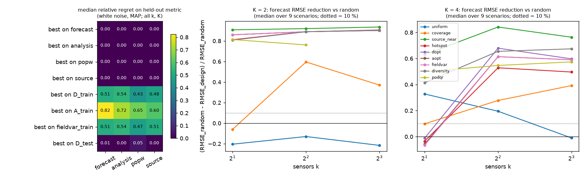
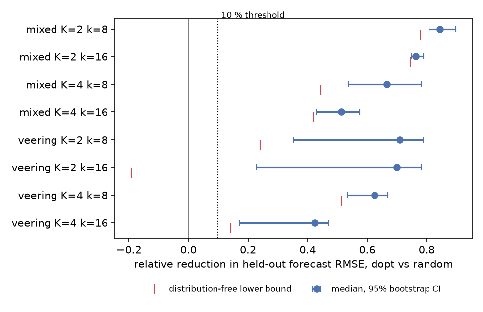
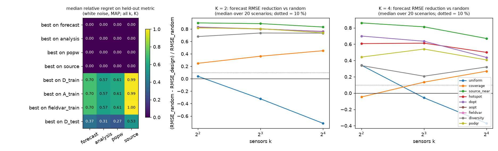
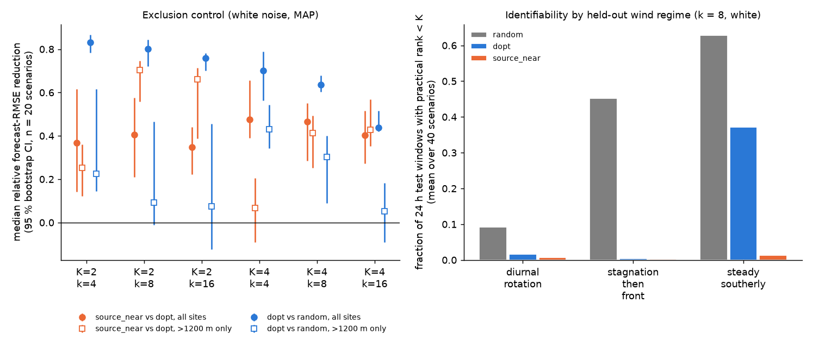

10 E07 Cross-objective placement on held-out winds
Simulated passive tracer only; nothing here is evidence about ambient PM2.5, real sources or deployment.
Question (plan 2). Which placement objective is best for which held-out inference task (forecast, analysis field, source strengths, population-weighted field)? The plan’s hypothesis was that no single network wins on all of them. Confirmatory test (protocol §12): does the D-optimal network (dopt) reduce held-out one-step forecast RMSE by ≥ 10 % relative to random networks, for k ≥ 8?
Evidence label. 32² pilot: exploratory. 64² sweep, dopt vs random: confirmatory, supported in the cells run (scope approved by the user: state/decisions/2026-11-13-e07-confirmatory-scope.md). Everything else in the sweep (source_near vs dopt, mechanism, endpoint agreement): exploratory.
Evidence. Design note docs/research/cross-objective-design.md (committed in 3e7d4d2 before any E07 computation; deviations in its §12); tables tables/e07-local-* and tables/e07-sweep-*; audit docs/research/gates/gate-07-cross-objective.md (with check scripts); journal state/experiments/e07.md. Report-only summaries below are produced from the committed sweep tables by scripts/report_e07.py.
10.1 What we did
- Designs (see Methods): random (10 networks), uniform, coverage, source_near (locations-only control), hotspot, dopt (greedy Bayesian D + 1-swap), diversity and podqr in the sweep; the pilot also had aopt and fieldvar. Each design declares what it knows and sees training hours only (gate-06 condition 1); the POD archive comes from a prior ensemble of strengths, not the truth.
- Training winds:
veering, ormixed(steady westerly, veering, weak/variable); the pilot also had an exactlyconstantwesterly. Test winds are always held out: steady southerly, stagnation then front, diurnal rotation. - Estimator and score: MAP over a 24 h window ending at each issue time, then a one-hour forecast with the known wind, scored against the noise-free truth over 425 test issue times (64²). Noise arms: white (primary), AR(1) ρ = 0.8, per-site σ. R = 5 paired noise draws per arm.
- 32² local pilot: upwind, dt 300 s, shortened 4/1/6-day calendar, K ∈ {2, 4}, k ∈ {2, 4, 8}, seeds 0–2; 18/18 scenarios (commit e3f7de0).
- 64² HPC sweep: split VanLeer, dt 30 s (A2), protocol calendar, K ∈ {2, 4}, k ∈ {4, 8, 16}, seeds 0–9, 2 training winds: 40/40 scenarios, Slurm job 204894, code dd2c51c, ~12 h on 64 CPUs. This is a user-requested scope cut (design-note deviation 6, decided before any 64² run): K = 8, k = 32 and seeds 10–19 were not run.
10.2 Pilot (32², exploratory)

- Optimised designs beat random by a median 0.6–0.9 forecast-RMSE reduction, except at K = 4, k = 2. Uniform layouts are worse than random.
- The locations-only
source_nearbeatdoptin 44 of 54 (scenario, k) pairs, by 27–48 % at k ≥ 4. - The network best on forecast was also best on field, source and population-weighted error (median cross-endpoint regret 0).
- Choosing the network by training-wind D gives a median forecast regret of 0.51; choosing by D on the test winds, 0.006.
- AR(1) and per-site arms gave the same ordering; NNLS was within ~0.05 of MAP.
podqrwas undefined in 36 of 162 cases. Where spacing binds, greedy was exact in 29/36 blocks, greedy + swap in 34/36.
Lead decisions before the sweep: dopt stays the confirmatory network (re-designating source_near after seeing the pilot would have been outcome-driven); A2 numerics; no wind-robust arm (that is E15’s question).
10.3 64² sweep: confirmatory result
| training wind | K | k | n | median reduction | 95% bootstrap CI | distribution-free CI | mean [CI] | dopt wins/losses | verdict (bootstrap / distribution-free) |
|---|---|---|---|---|---|---|---|---|---|
| mixed | 2 | 8 | 10 | 0.84 | 0.81–0.90 | 0.78–0.91 | 0.85 [0.82–0.88] | 10/0 | above / above |
| mixed | 2 | 16 | 10 | 0.76 | 0.75–0.79 | 0.74–0.80 | 0.75 [0.69–0.79] | 10/0 | above / above |
| mixed | 4 | 8 | 10 | 0.67 | 0.54–0.78 | 0.44–0.82 | 0.64 [0.54–0.74] | 10/0 | above / above |
| mixed | 4 | 16 | 10 | 0.51 | 0.43–0.58 | 0.42–0.62 | 0.51 [0.44–0.60] | 10/0 | above / above |
| veering | 2 | 8 | 10 | 0.71 | 0.35–0.79 | 0.24–0.82 | 0.60 [0.45–0.74] | 10/0 | above / above |
| veering | 2 | 16 | 10 | 0.70 | 0.23–0.78 | -0.19–0.80 | 0.50 [0.16–0.75] | 8/2 | above / straddles |
| veering | 4 | 8 | 10 | 0.62 | 0.53–0.67 | 0.51–0.70 | 0.60 [0.53–0.67] | 10/0 | above / above |
| veering | 4 | 16 | 10 | 0.42 | 0.17–0.47 | 0.14–0.50 | 0.33 [0.20–0.45] | 9/1 | above / above |
Cells with bootstrap CI above 10 %: 8/8; distribution-free: 7/8; mean bootstrap: 8/8.

Verdict. In the 64² synthetic sweep (K ∈ {2, 4}, k ∈ {8, 16}, training winds veering or mixed, 10 seeds per cell, white noise, MAP with a 24 h window), the D-optimal network reduced held-out one-step forecast RMSE relative to the mean of 10 random networks by a median of 42–84 % per cell. The 95 % bootstrap CI lay above 10 % in 8/8 cells, so the preregistered hypothesis is supported in the cells run. With distribution-free intervals it is supported in 7/8 (veering K = 2, k = 16 straddles because dopt lost to random in 2 of 10 seeds); with a bootstrap of the mean, 8/8. K = 8 and k = 32 were not run; by the protocol’s own rule those cells are unresolved, so at protocol level the verdict is “supported in the run cells, unresolved overall” unless the user confirms the reduced cell set as the confirmatory population (gate-07 issue 1, open). A locations-only control placing sensors next to the known sources did better still, so the gain over random is attributable to knowing source locations, not to D-optimisation.
10.4 64² sweep: exploratory results

10.4.1 Sensors next to the sources beat D-optimisation
| noise arm | paired (scenario, k) | source_near better | median (dopt − source_near)/dopt |
|---|---|---|---|
| white | 120 | 115 | 0.41 |
| ar1 | 120 | 110 | 0.30 |
| persite | 120 | 118 | 0.47 |
| k | dopt: scenarios with ≥ 1 rank-deficient 24 h test window | source_near: same |
|---|---|---|
| 4 | 32/40 | 20/40 |
| 8 | 30/40 | 7/40 |
| 16 | 26/40 | 6/40 |
source_nearbeatsdoptin 115/120 paired (scenario, k) comparisons with white noise (110 with AR(1), 118 with per-site σ), in all 20 source layouts, by a median relative margin of ≈ 0.4 (gate-07: IQR 0.23–0.60; bootstrap CI over layouts 0.28–0.56). At scenario level source_near is better at every k in 36/40 (white), 31/40 (AR(1)), 39/40 (per-site). Pairs share layouts and test winds, so pooled-pair p-values are not quoted. This contrast was not preregistered.
10.4.2 Mechanism: per-window rank loss under an unseen wind
Field checks on two scenarios (gate-07, veering:2:7 and mixed:4:9):
- dopt networks have no rank-deficient 24 h windows during training but 17.6 % in the test period; all 75 deficient windows fall in the held-out steady southerly blocks — a direction never seen in training. source_near has none.
- Those windows carry 97.5 % (veering:2:7) and 37 % (mixed:4:9) of dopt’s squared forecast error.
- Sweep-wide (table above), dopt has at least one deficient test window in 30/40 scenarios at k = 8 against 7/40 for source_near.
- Whole-period information criteria miss this: D on the test winds favours source_near in only 35/120 cases, and selecting by D_test still costs a median forecast regret of 0.37.
Reading (inference): designs tuned to the training winds do not transfer to an unseen wind direction, while sensors at the sources stay informative whatever the wind. The evidence rests on one unseen direction, and the window analysis covers 2 scenarios in detail.
10.4.3 Endpoint agreement is close to built in
The network best on forecast is also best on source, analysis and population-weighted error (forecast-best equals source-best in 116/120; median off-diagonal regret 0). But all four endpoints are functions of the same static estimate under a perfect model and constant sources, so agreement is expected; it is weak evidence about the plan’s “no single network wins” hypothesis and must not be stated as a general finding.
10.4.4 Other checks
- Leakage: designs rebuilt with every non-training hour set to NaN give the committed sites; forecast scores were reproduced to 5 digits by an independent implementation.
- VanLeer superposition (A2): the max superposition error over the full calendar is a median 0.038 µg m⁻³ and 0.183 at worst (0.73σ at a single cell-hour), ~27× the 96 h figure quoted in A2; re-scoring on a perfectly linear truth changed RMSE by ≤ 1e-4 and kept the ordering.
- Greedy optimality: greedy + swap is exact in 146/160 block checks (greedy alone 91/160); hotspot has higher D_train than dopt in 10/120 cases. This does not affect the comparison (source_near never has the highest D_train).
- podqr was undefined in 1 (k = 8) and 3 (k = 16) of 40 scenarios per arm — fewer than the design note predicted.
10.5 Audit outcome (gate-07): pass with conditions
Numbers reproducible, no leakage, confirmatory rule implemented faithfully. Conditions concern what the results may be said to show:
- Scope: state the verdict as “supported in the 8 cells run”; the user must confirm the reduced cell set (open).
- Credit: every statement of the confirmatory result carries the source_near caveat.
- Mechanism: per-window rank loss under one unseen wind direction; make it sweep-wide from cached fields.
- Artefact risk: source_near’s sites (456–643 m from source centres) sit inside the 1200 m truncated emission disc (σ = 400 m), where they see local emission under any wind. With every site within 1200 m excluded, source_near still won in the two scenarios checked (k = 8: 0.043 vs 0.203 and 0.115 vs 0.229).
- Statistics: percentile bootstrap of a median at n = 10 is anti-conservative; report the distribution-free and mean variants (done above).
10.6 What changed because of the audit
The confirmatory table now carries the distribution-free and mean-bootstrap variants; the verdict wording is the gate’s; the A2 decision file was updated with the full-calendar superposition error; the source_near contrast is labelled exploratory and pooled p-values were dropped.
10.7 Follow-up controls (post hoc, exploratory; all 40 scenarios, no new solves)
These two analyses were prompted by gate-07. They re-use the cached 64² fields and change no confirmatory number. Evidence: tables/e07-followup-*.csv; code scripts/e07_followup.py and the driver’s --exclude-radius option.
1. Sensors kept out of the emission discs. All candidate sites within 1200 m of any source centre were removed, which is the 3σ truncation radius of the area source. That leaves 152–188 of about 195 candidates, and every design was rebuilt on the reduced set.
- Near-source still beats D-optimal. Median advantage 0.375 (95 % CI 0.31–0.45; distribution-free 0.31–0.46), 104/120 pairs, 19/20 source layouts. Without exclusion it was 0.41, 115/120, 20/20. The exception is the sparsest cell (K = 4, k = 4), where the two are indistinguishable.
- But D-optimal’s gain over random shrinks sharply, from 0.71 to 0.20 (CI 0.15–0.33; 87/120). On the reduced candidate set no cell clears the 10 % confirmatory threshold, so the exclusion version of the test is unresolved. Much of D-optimal’s margin came from sites inside or next to the emission discs. The confirmatory verdict above stands for the protocol’s candidate set only.
2. Where identifiability is lost. This is the fraction of 24 h test windows in which a k = 8 network cannot separate all sources (practical rank < K):
| Held-out wind regime | D-optimal | near-source | random |
|---|---|---|---|
| steady southerly (absent in training) | 0.37 (28/40 scenarios) | 0.01 (3/40) | 0.63 |
| stagnation then front | 0.005 | 0.002 | 0.45 |
| diurnal rotation | 0.017 | 0.007 | 0.09 |
- Pooled, 79 % of D-optimal’s squared forecast error falls in such windows (per-scenario median 55 %); for near-source the share is 6 %.
- The loss is a signal-to-noise effect, not a structural one: exact rank is full for k ≥ 8.
- Gate-07’s 2-scenario finding therefore generalises. D-optimal networks tuned to training winds go blind mainly when the unseen southerly wind blows. This is still one unseen direction, and 12/40 scenarios show no such loss.

10.8 The ordering depends on estimator memory (gate-09, 64², exploratory)
E09 showed that an estimator using all past data forecasts much better than E07’s frozen 24 h window. The gate-09 audit re-scored the committed E07 sweep designs, with the same noise draws, under both estimators. All 1440 white-arm map24 rows were reproduced exactly first.
| Estimator | near-source better than D-opt by | Pairs near-source wins | Layouts favouring near-source |
|---|---|---|---|
| 24 h window (E07 frozen) | +0.41 [0.33, 0.47] | 115/120 | 20/20 |
| All past data, N(0, I) prior | −0.25 [−0.38, −0.18] | 17/120 | 1/20 |
- D-optimal beats random under both estimators: 117/120 and 120/120 pairs.
- The reversal survives re-scoring on a perfectly linear truth.
- Reading: a short window cannot bridge the blind spells that D-optimal networks have under unseen winds, so sensors at the sources win. With all past data those spells are bridged, and D-optimal’s greater total information wins.
- Correct wording: near-source placement beats D-optimal for a 24 h-window estimator; the ordering reverses when the estimator uses all past data.
- Consequence: which placement is “best” depends on assumed source persistence (estimator memory). E10 and E11 therefore treat memory length as a declared factor.
Evidence: docs/research/gates/gate-09-filter.md and gate-09/check_sweep.py.
10.9 Limitations
- Perfect model: known wind, known source locations, constant sources, known background; the estimator uses the truth’s solver.
- Sensors may sit inside the 400 m-σ area-source footprint; point sources were not studied.
- One unseen wind direction (southerly) drives the mechanism; a 24 h estimator window only.
- 10 seeds per cell; cells are not independent (two training-wind arms share layouts, test winds and noise seeds).
- σ ≈ 0.25 ≈ 0.05·c_bg is effectively a fixed instrument noise, and near-source SNR is ~50–80, which is why the per-site arm changes little.
- The forecast is from a static inverse, not a filter; calibration endpoints are deferred to E09.